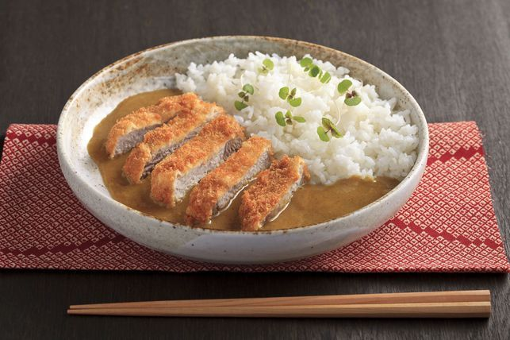

Description
Katsu curry is a favorite dish in Japan, featuring a heaping plate of rice with flavorful Japanese curry, which tends to be sweeter and more mild in flavor than Indian curry, and topped with tonkatsu. Deep-fried tonkatsu and chicken katsu taste amazing slathered in curry sauce.
Ingredients
- 1 tbsp vegetable oil
- Onion, finely chopped
- 1/2 carrot, grated
- 620ml water
- 1 packet S&B Golden Curry Sauce Mix Mild 92g
- 4 pork cutlets
- Salt and pepper to taste
- 50g plain flour
- 1 egg, beaten
- 100g panko breadcrumbs
- Vegetable oil, for deep frying
- Cooked rice, to serve
- Select all ingredients
Steps
- Heat the 1 tablespoon of oil in a large saucepan.
- Fry the onion and carrot over a medium heat until softened.
- Add the water, bring to a boil, reduce the heat and simmer for 10 minutes.
- Remove from the heat then add the curry roux, in pieces, stir until completely dissolved.
Simmer gently for anoter 5 minutes, stirring constantly.
- Season both sides of the pork cutlets with salt and pepper. Lightly coat them with the flour, dip in the beaten egg and then coat with the breadcrumbs.
- Heat oil in a large heavy-bottomed saucepan to 180°C. Deep fry the meat until golden and cooked through. Drain on kitchen papers.
- Slice the meat and serve with the curry sauce drizzled over the cooked rice.
Return to top
Check Other Recipes